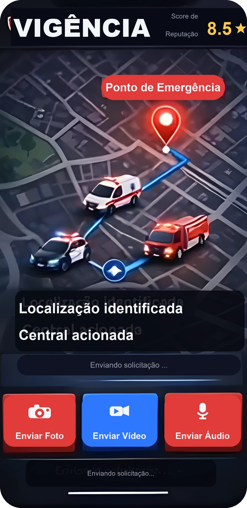
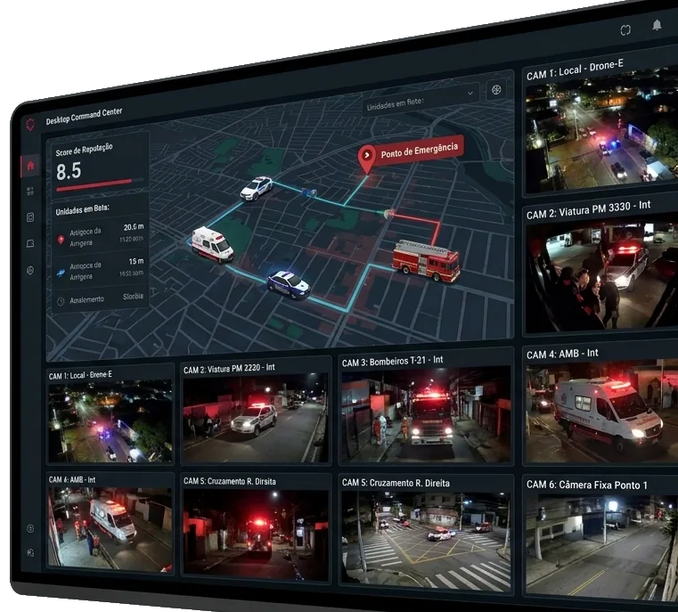

Segurança na palma da mão
Vigência é a plataforma que ajuda os serviços de emergência
a salvar vidas em segundos, com poucos cliques.
Prejuízo em números
Prejuízo anual estimado no Brasil com falsas ligações para serviços de emergência. Cada trote gasta combustível, equipamento e horas de equipes que poderiam estar em atendimentos reais, e quem paga essa conta é a sociedade.
Ligações para serviços de emergência em épocas de alta são trotes. Enquanto a central atende uma chamada falsa, a linha fica ocupada e quem está numa emergência de verdade espera mais pelo socorro.
Trotes registrados pelo SAMU-DF em apenas um ano. Cada ambulância enviada para uma chamada falsa fica indisponível na cidade, e um atendimento real pode chegar mais tarde do que deveria.
Triagem inteligente desde o primeiro toque
No modelo atual, o pedido de socorro depende de uma ligação e de a linha estar livre. O Vigência faz esse pedido pelo celular em poucos segundos.
Quando a linha está ocupada por um trote, quem precisa de socorro fica esperando. O Vigência foi criado para resolver esse problema.
O aplicativo faz a triagem já no primeiro contato: identifica quem pede ajuda, mostra onde a pessoa está e reconhece o trote antes que uma equipe saia. Com isso a central deixa de mobilizar recursos por engano, e o atendimento chega mais rápido a quem realmente depende dele.
Como funciona no seu celular
O pedido de ajuda sai em poucos toques no celular. O app confirma quem está chamando e mantém em sigilo a posição das equipes.

Acionamento em 2 cliques
Dois toques bastam para pedir socorro, sem precisar telefonar nem esperar a linha desocupar.
GPS exato em tempo real
O celular manda a localização exata sozinho, então ninguém perde tempo tentando descrever onde está nem passa o endereço errado.
Foto, vídeo e áudio na hora
Dá para enviar foto, vídeo e áudio direto para a central, que já vê o que está acontecendo antes de despachar uma equipe.
Identidade verificada e reputação
Cada usuário tem login e um score de reputação. Isso segura os trotes e ajuda a central a priorizar os chamados de confiança.
Sigilo tático
No mapa do cidadão, a posição das viaturas fica escondida. Assim ninguém usa o app para rastrear ou emboscar as equipes.
Painel tático
O painel é a tela da central. Ele mostra só os pedidos que passaram na triagem e atualiza as informações em tempo real, para a equipe decidir rápido.
- Só chamados verificados. Trotes e chamadas mudas são filtrados antes de chegar à central, e as linhas ficam livres para emergências reais.
- Visão em tempo real. Cada ocorrência aparece com tipo, localização por GPS e status atualizado a cada segundo.
- Equipe e tempo de resposta. O painel mostra qual equipe foi acionada e há quanto tempo, o que ajuda no despacho e no acompanhamento.
- Priorização por gravidade. Os casos mais críticos sobem na lista para serem atendidos primeiro.

Objetivos de performance (S.M.A.R.T.)
A meta principal do projeto, detalhada pelo método S.M.A.R.T.
Específico
Desenvolver um app inteligente de emergência com autenticação.
Mensurável
Reduzir em 20% os acionamentos falsos (trotes).
Alcançável
Viável através do cruzamento de GPS, mídia e score de reputação.
Relevante
Salvar vidas, otimizar recursos e proteger as equipes de rua.
Temporal
Implantação e análise de resultados em 36 meses (3 anos).
Cronograma de expansão
Quatro fases para validar, integrar e levar o Vigência a todo o território brasileiro.
Desenvolvimento e MVP
Foco: Programação, infraestrutura e testes fechados de segurança.
Piloto em órgãos parceiros
Foco: Integração com PM, Bombeiros e SAMU locais e testes no painel.
Regionalização
Foco: Expansão estadual e análise de métricas de redução de trotes.
Expansão nacional
Foco: Escalabilidade em nuvem para operação em todo o território brasileiro.
Equipe de projeto
Orientação, coordenação e o time de engenharia e desenvolvimento do Vigência.